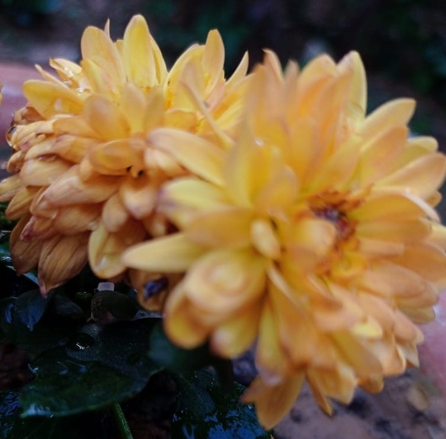

Gerbera
Gerbera is a genus of plants in the Asteraceae (daisy family). It was named in honour of German botanist and medical.Gerbera is native to tropical regions of South America, Africa and Asia. The first scientific description of a Gerbera was made by J.D. Hooker in Curtis's Botanical Magazine in 1889 when he described Gerbera jamesonii, a South African species also known as Transvaal daisy or Barberton daisy. Gerbera is also commonly known as the African daisy.
Gerbera
Why FlowerInfo ?
Why we're different?
- Believe in doing our work with honesty.
- Make sure optimized information should reach to you all.
- Serve for the betterment of customers.
- Focus on enhancing knowledge.
- Our website is an encyclopedia.

What Clients Say
FlowerInfo is really an amazing website it contains various facts and figures which can help you to enlighten you half knowledge.

Sheissuru
Co-founder at FlowerCare
FlowerInfo is awesome,i've been using this site for so long while gathering informtion to make new projects.

Ericson
Director at writometer

Follow Flowerinfo on our social media to stay tuned with us.Thank you!
CONTACT US
 Near Nakshatravan,Ranchi
Near Nakshatravan,Ranchi
 +0651 2460366
+0651 2460366
 flowerinfo@gmail.com
flowerinfo@gmail.com
Website Created by Sheissuru